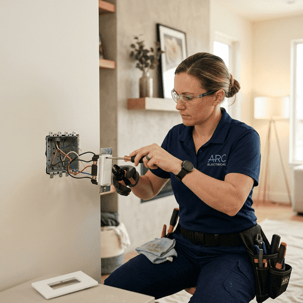

Servicii rapide, fiabile și conforme pentru întreaga zonă Cluj și împrejurimile sale.

Nu risca siguranța casei tale cu lucrări DIY electrice. Echipa noastră de handymeni calificați este gata să rezolve problemele electrice zilnice, asigurând conexiuni puternice, conforme și perfect funcționale.
Fiecare lucrăm începe cu o evaluare atentă a cablurilor, circuitelor și a compatibilității corpurilor de iluminat pentru a recomanda soluția cea mai sigură.
Trimite-ne o poză cu corpul de iluminat achiziționat sau cu priza defectă pe WhatsApp și primești rapid o estimare clară!
Trimite mesaj acum